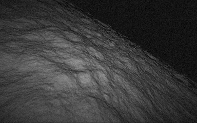
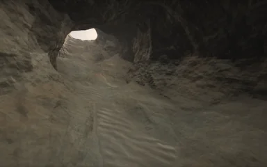
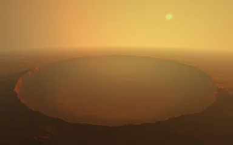
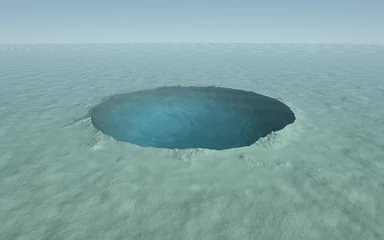
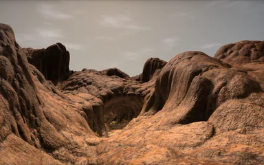
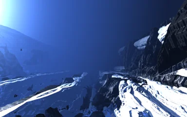
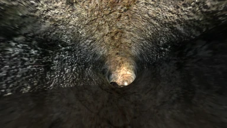
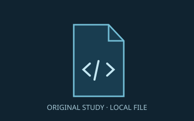

选择地貌，进入实时场景。

多层起伏 · 保留原颗粒

连续洞道 · 实时穿行

原环形坑 · 原版保留

口径 2/3 · 坑深 2 倍

峡谷、拱洞与天空

分形山体 · 雪岭穿行

十路洞道 · 原作复刻

首次选择原包 · 此后本机直接打开
原码原图 · 清晰采样 · 三维观察
原码原图 · 原作航程 · 原台实时运行
Inigo Quilez / iq · Canyon原作。这里仅公开原作参考截图与加载器；原码和贴图保存在本机IndexedDB，不上传。清理浏览器数据后需重新选择原包。
网页保留已有六套场景，新增第七个无尽洞穴。参考录屏和自有纹理实验保存在配套完整包中；网页的沙漠峡谷使用原始公开纹理。本页面为老师代码学习与派生研究展示，不表示原作者的非商业等许可限制已经解除。